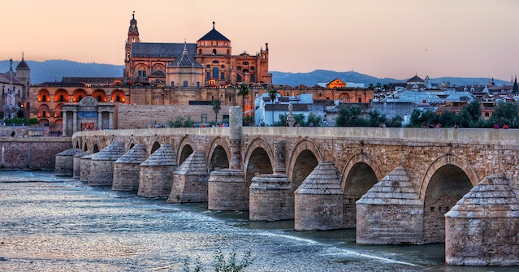
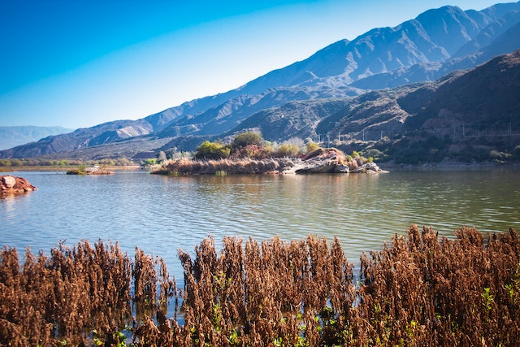

Valle Hermoso is a small town in the province of Córdoba, Argentina, located 75 km (47 mi) from the city of Córdoba and 800 km (500 mi) from Buenos Aires. It had about 5,500 inhabitants at the 2001 census [INDEC].
Valle Hermoso ('Beautiful Valley') is one of a number of small towns straddling Route 38 and the now disused railway line, which runs through the Punilla Valley from the south, and the city of Córdoba, north to La Rioja. The town's central district contains commercial stores and a number of hotels.
Valle Hermoso sits at an altitude of about 1,000 m (3,300 ft) providing a temperate climate. It is high enough to moderate summer heat yet low enough that winters are mild.[citation needed] Tourism peaks during the summer months of December through February when town population can double.[citation needed] Several large, old, hotels, such as El Peñón and El Castillo are in the area. Hotel Vaquerías, over a century old, sits in a hillside niche with artesian springs, swimming, and horseback riding.
"Vaquerías" or "place of cattle" is a natural funnel where vaqueros (cowboys) would drive the cattle from the grazing pastures for branding, birthing, or collection. Today, La Reserva Natural de Vaquerías is a nature preserve dedicated to preventing construction at or alteration of the area's natural environment, fauna and flora.
Here are couple beautiful photos of Valle Hermoso in Cordoba!
 